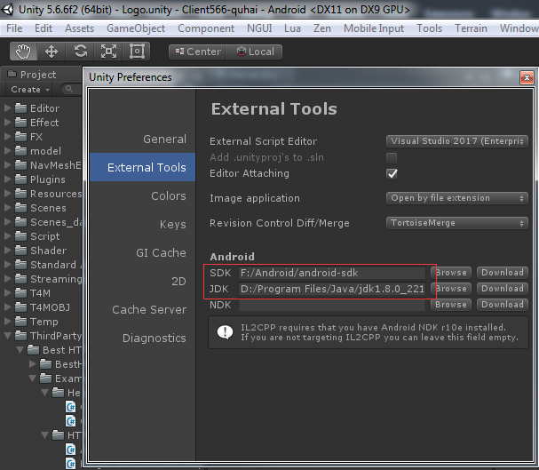

android
没有接入任何SDK的安装包
-
首先需要配置android sdk以及java jdk，Unity菜单->Edit->Preferences

-
然后在Unity菜单->File->Build Settings
-
如果遇到以下报错，原因是jdk版本和unity版本不匹配，需要选择安装\ubuntu\share\software\JDK\jdk-8u221-windows-x64.exe，并修改第一步的指向路径
- 生成apk包即可，无需安装测试
第三方聚合SDK，CP负责出母包，发行方负责出渠道子包